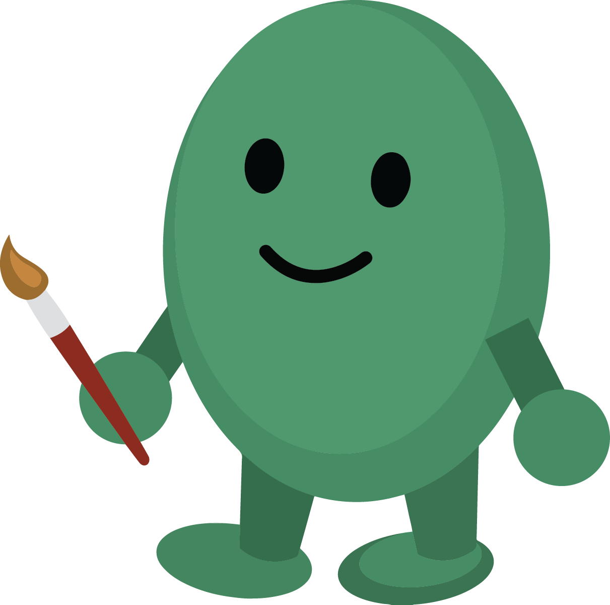

About Me

Hello! My name is Jadon Kam, and I graduated from Wilfrid Laurier University with a Bachelor's Degree in User Experience Design.
For two and a half years, I have worked on various digital design and UX projects for Health Canada, specifically working as a Digital Communications Officer for Canada's Food Guide.
I decided to become a UX designer due to my love for design and my interest in solving problems. At a young age, I developed an interest in drawing and making crafts at school. As I grew older, I became interested in other art activities such as painting, going to art museums, and digital art. Realizing that I could apply this passion for design into my career, I chose to complete a 5 year program at Wilfrid Laurier University to prepare myself with the skills I needed to be a strong UX designer.
Here’s a bit more about me:
My work for Health Canada/Canada's Food Guide:
I designed a web tool that lets users create personalized tip sheets about healthy eating to help them apply Canada's Food Guide in their daily lives. Users can create a tip sheet about various food-related activities and customize what's on the sheet based on their food and lifestyle preferences. I planned usability tests for my Figma prototype to test my web tool with adults, teens, and kids. After usability testing, I applied user feedback to reorganize content to make it easier for people to find topics that aligned with their interests. (A case study for this project will be added to my portfolio soon.)
I published recipes, cooking skills articles, scientific reports, and other web pages using the CMS platform Drupal and by applying my HTML and CSS skills.
I used data from card sorting and tree testing to reorganize the information architecture structures for the website's "Tips for healthy eating" and "Resources for professionals" categories. I designed a Figma prototype for a new navigation interface to replace the carousels on the web pages of those two categories. The web development team is currently working on adding my new interface to the website.
I used Adobe Illustrator and Photoshop to create graphics for many projects, such as the Toolkit for Educators. I used InDesign to create worksheets that educators could use in their lessons. I ensured that new designs aligned with the Canada.ca design system and the food guide’s brand guidelines.
On behalf of my team, I presented at the 2023 Health Canada Science Forum and showed my team's work to redesign Canada's Food Guide's recipe website. I created a presentation and poster to demonstrate the problems with the previous recipe website design, the prototype used for usability testing, the results and feedback from testing, and the final design. I justified my team's design decisions by connecting them to user feedback and advocated for the importance of UX research to other Health Canada teams (the majority who were unfamiliar with UX processes). I won the award for Best Student Poster for the poster I created to accompany my presentation.
My skills:
- UX skills: user research, prototyping (Figma), usability testing, design thinking
- For two and a half years, I have worked for Canada's Food Guide as a Digital Communications Officer, where I improved the user experience of the current food guide website and developed new prototypes for new digital products.
- In the past years, I have also developed my UX skills through working on many UX projects in school and for design competitions.
- Digital art and graphic design (Adobe Illustrator, Photoshop, and InDesign)
- All of my UX projects highlight the interfaces that I designed. I also designed the art museum-themed interface and characters of my portfolio's website.
- I have 2 years of experience as a graphic designer for my school's yearbook. I also took extracurricular art classes for 4 years to develop my skills.
- HTML and CSS
- I created this portfolio by using HTML and CSS instead of a website builder.
My favourite project:
It is difficult for me to choose one project, so I will choose one in terms of the design process and one in terms of the final design.
-
Focusing on the design process, my favourite project would be working with Rocket Homes to design a real estate website to help the blind and visually impaired learn about homes on the market. Through this project I was able to interview users with different types of visual impairments, learn how they use screen readers and other assistive technologies, and design a website that was focused on their needs and preferences. It was my first time working on a project that emphasized accessibility as its main priority, and as a result, it is also the project where I have learned the most. While the visual design of the final product was quite basic, as that was not the priority of the project, being able to hear the positive feedback from people with visual impairments when they used our prototype and being able to learn from them throughout the design process made this one of my favourite projects.
-
In terms of the final design, my favourite project would be Travel Kitt. I loved creating fun activities and visuals for children to solve the problem of making travel information interesting and engaging for children. As someone who has enjoyed working as a summer camp counsellor in the past, thinking of activities that children would be interested in doing and designing them as part of the app was an enjoyable challenge. I also loved what my teammate and I were able to create visually, specifically the concept to have a digital book which families can keep to learn about places and remember their happy experiences on vacation.